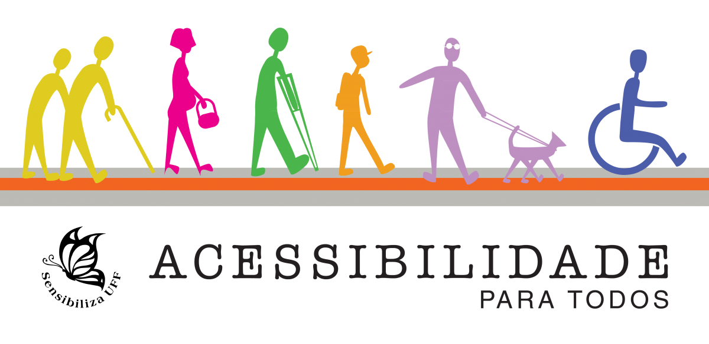
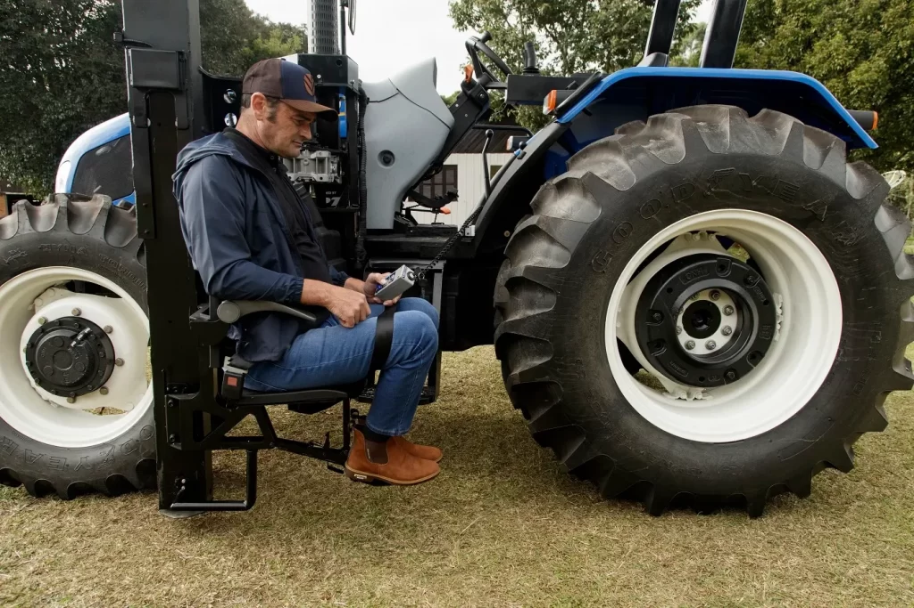

Illustrative Drawing
.jpeg)
Some of the main accessibility symbols

Man with a technological device that makes tractor use accessible
Illustrative Drawing
Some of the main accessibility symbols
Man with a technological device that makes tractor use accessible
See More
Food security: Increased food production in a more efficient and sustainable way, helping to
ensure the supply of the population. Environmental preservation: Reduction in the use of pesticides and more sustainable agricultural
practices, contributing to the preservation of natural resources. Job creation and income generation: The modernization of agriculture creates new job opportunities
and boosts the rural economy. Social inclusion: The democratization of access to technologies contributes to social inclusion,
reducing inequalities among farmers. Sustainable development: Precision agriculture contributes to more sustainable development,
reconciling food production with environmental preservation.
Cost: The high cost of specialized equipment and software can limit access for small and
medium-sized producers. Connectivity: The lack of communication infrastructure in rural areas hinders the use of
technologies that depend on the internet. Training: The complexity of new technologies requires farmers to have access to adequate training
and qualification, which can be a challenge in more isolated regions. Cultural adaptation: Resistance to change and the difficulty in adapting traditional practices to
new technologies can slow down the adoption process. Language: The interface of software and applications is often complex and in languages that are
not mastered by all farmers.
Benefits:
Challenges:

Accessibility to new technologies in the field is a challenge that needs to be overcome to ensure a more sustainable and inclusive future for agriculture. By investing in training, infrastructure, and public policies that promote equality, we can build a stronger and more resilient agricultural sector, benefiting both farmers and society as a whole.
Accessibility of new technologies in the field is fundamental to ensure a fairer, more sustainable, and prosperous future for all. By investing in training, infrastructure, and public policies that promote equality, we can build a stronger and more resilient agricultural sector, benefiting both farmers and society as a whole.